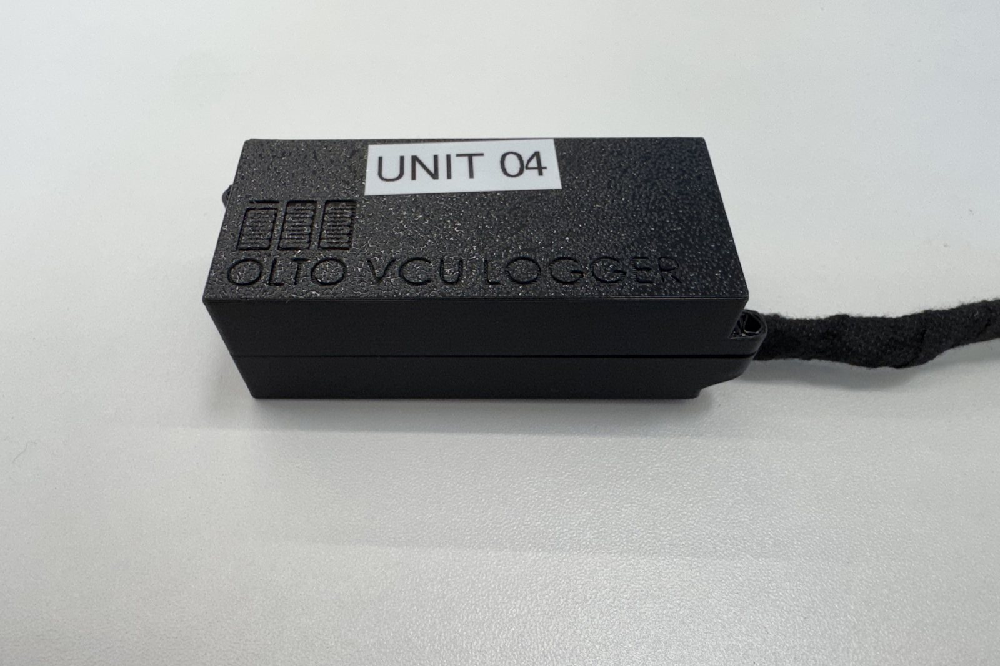

Infinite Machine · 2026
Vehicle Telemetry Logger Fleet End-to-End Diagnostic Tooling Program
A fleet of twelve Teensy 4.1 data loggers for an EV platform, built to catch a failure that only appeared in the field: vehicles shutting off at random. The logged telemetry isolated a rogue CAN bus command triggered by a faulty mobile app update.
- Designed, manufactured, and deployed twelve loggers guaranteeing zero data loss across power interruptions.
- Wrote a companion desktop application with live CAN decoding, charting, and raw-frame inspection.
- Iterated 3D-printed vehicle-mount enclosures under tight packaging constraints, with custom cable strain relief.
A critical field failure with no reproduction path. I owned the whole response — instrumenting the vehicles, capturing the data, and tracing the root cause back to a software update error — inside a compressed three-week timeline.
- Managed the full product lifecycle: structural design, software, manufacturing, and field deployment.
- Launched twelve highly reliable loggers architected to guarantee data integrity through power loss.
- Turned millions of raw data points into readable dashboards and metrics for engineering analysis.
- Teensy 4.1
- CAN bus
- C++
- Desktop app
- 3D printing
- Root cause analysis
- Product lifecycle
- Data visualization
- Field deployment